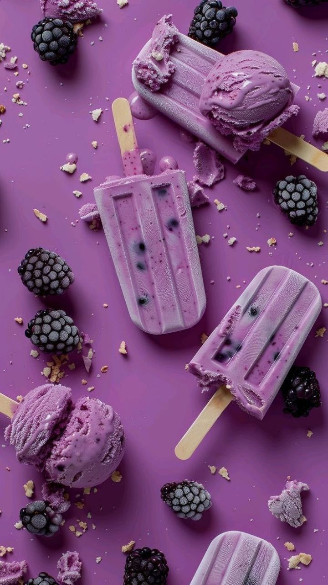

Cool, creamy, and antioxidant-rich! Fresh organic blackberries blended with protein-dense Greek yogurt, raw honey, and pure vanilla extract for a clean, guilt-free recovery snack.

Rinse fresh blackberries thoroughly in cold water and gently pat dry with paper towels.
In a high-speed blender, combine blackberries, Greek yogurt, wildflower honey, lemon juice, and vanilla extract. Blend until creamy and smooth.
Pour the purple berry mixture into silicone popsicle molds, leaving ¼-inch headspace at the top for freezing expansion.
Insert wooden popsicle sticks and freeze for at least 4–6 hours until completely solid. Run warm water over molds for 5 seconds to release easily.